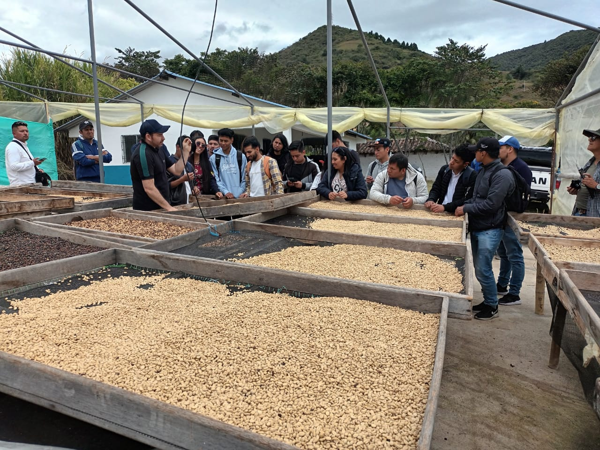
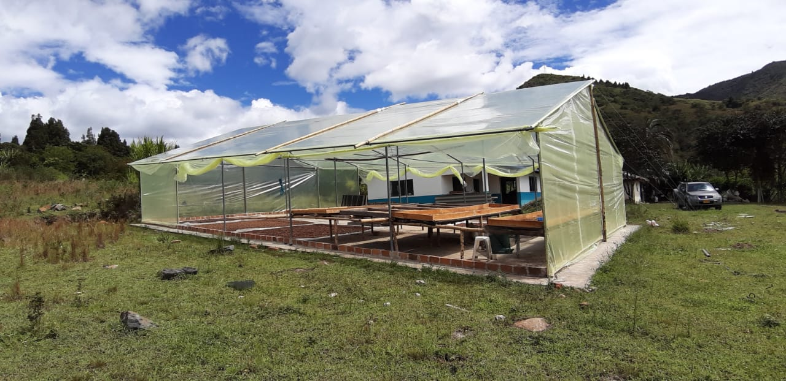
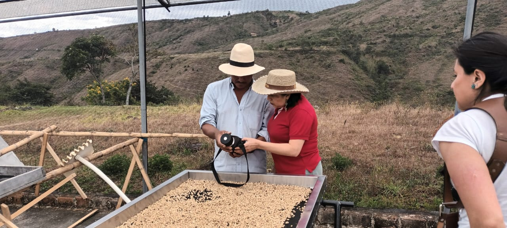
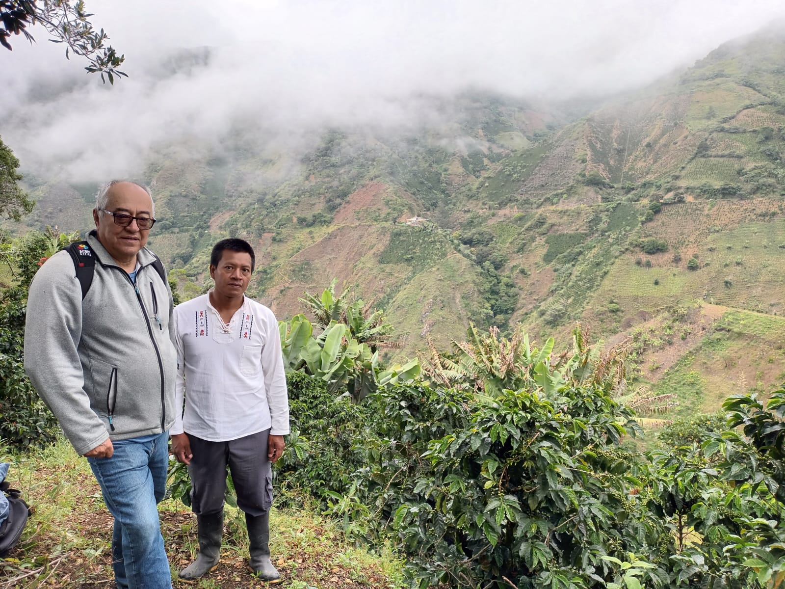
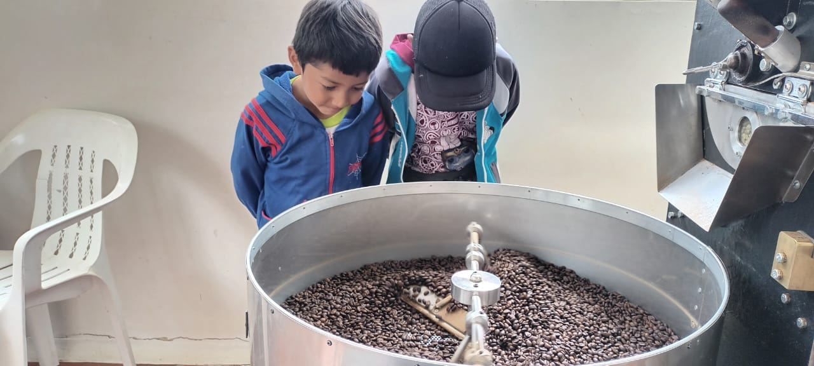

Experiencia Cafetera
Coffee Experience
Nuestra
Galería
Our
Gallery
Cada lote de Kitopamba cuenta una historia. Desde las montañas del Cañón del Juanambu hasta cada proceso de cultivo, fermentación y secado, compartimos la esencia de nuestra finca y el trabajo detrás de cada taza excepcional.
Every Kitopamba lot tells a story. From the mountains of the Juanambu Canyon to each cultivation, fermentation and drying process, we share the essence of our farm and the work behind every exceptional cup.







